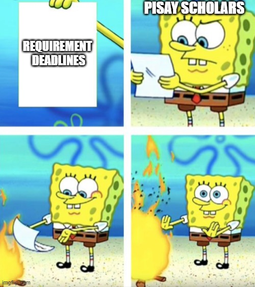

Gen Z Memes
Introduction
A webpage explaining some of the most popular "Generation Z Memes" to other people who don't get them so they can relate. This webpage contains everything there is to know about the most known Gen Z memes, so that other generations who don't get them can relate, especially when watching on:
- Youtube
- YouTube Shorts
- TikTok
What are memes, anyways?
Usually, a meme is either a video/picture that carries a symbolic meaning. Pictures, more specifically "meme templates" are usually overlaid with text, an meme using a widely known meme template is shown below.

If you can't interpret what's up there, since Spongebob, representing "Pisay Scholars", threw the paper, representing "Requirement Deadlines", into the fire, this meme tries to convey that Pisay Scholars don't care about deadlines. (I mean, some scholars do care, but pretty much, almost everyone procrastinates until the deadline.)
Almost anything can become meme material these days, like Jacob
This picture was taken by Sielby, who sent it to Jacob, who then sent it to our group chat, then Gabbi decided to make a meme out of it. This means that memes aren't specific to one genre, and a meme can come from any source, regardless how far it is from "memes".
Well-known Memes in Gen Z
This part of the webpage will list memes that are common in the areas listed in the introduction, some memes we will talk about are:
 |
The Rickroll. One of the famous memes you can find on the internet, it's usually done with baiting people into Rick Astley's "Never Gonna Give You Up" by saying the video is part of the current online topic. |
|---|---|
 |
The Gigachad. Another famous meme you can find on the internet, most likely YouTube Shorts. It's usually how "acceptable" you are in their opinion. |